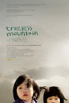
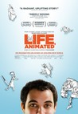

Movie Releases By Score

|
2101.
X-Men: Days of Future Past
Release Date:
May 23, 2014

The ultimate X-Men ensemble fights a war for the survival of the species across two time periods in X-Men: Days of Future Past. The characters from the original X-Men film trilogy join forces with their younger selves from X-Men: First Class in an epic battle that must change the past - to save our future. [Twentieth Century Fox]
|

|
2102.
Catch Me If You Can
Release Date:
December 25, 2002
Frank W. Abagnale (DiCaprio) worked as a doctor, a lawyer and as a co-pilot for a major airline -- all before his 21st birthday. A master of deception, he was also a brilliant forger, whose skill at check fraud had netted him millions of dollars in stolen funds. FBI agent Carl Hanratty (Hanks) has made it his prime mission to capture Frank and bring him to justice, but Frank is always one step ahead of him, baiting him to continue the chase. [DreamWorks]
|

|
2103.
Land of Mine
Release Date:
December 9, 2016

As World War Two comes to an end, a group of German POWs, boys rather than men, are captured by the Danish army and forced to engage in a deadly task – to defuse and clear land mines from the Danish coastline. With little or no training, the boys soon discover that the war is far from over. Inspired by real events, Land of Mine exposes the untold story of one tragic moment in post-war history. [Sony Pictures Classics]
|

|
2104.
Thoroughbreds
Release Date:
March 9, 2018
Childhood friends Lily and Amanda reconnect in suburban Connecticut after years of growing apart. Lily has turned into a polished, upper-class teenager, with a fancy boarding school on her transcript and a coveted internship on her resume; Amanda has developed a sharp wit and her own particular attitude, but all in the process of becoming a social outcast. Though they initially seem completely at odds, the pair bond over Lily's contempt for her oppressive stepfather, Mark, and as their friendship grows, they begin to bring out one another's most destructive tendencies. Their ambitions lead them to hire a local hustler, Tim, and take matters into their own hands to set their lives straight.
|

|
2105.
Afterimage
Release Date:
May 19, 2017
Polish director Andrzej Wajda returns with this passionate biopic about avant-garde artist Wladyslaw Strzeminski (Boguslaw Linda), who battled Stalinist orthodoxy and his own physical impairments to advance his progressive ideas about art. [Film Movement]
|
2106.
Jinn
Release Date:
November 16, 2018
Summer is a 17-year old carefree black girl, whose world is turned upside down when her mother, a popular meteorologist named Jade Jennings, abruptly converts to Islam and becomes a different person, prompting Summer to reevaluate her identity.
|
|
|  |
2107.
Treeless Mountain
Release Date:
April 22, 2009
When their mother needs to leave in order to find their estranged father, seven year-old Jin and her younger sister, Bin, are left to live with their Big Aunt for the summer. With only a small piggy bank and their mother's promise to return when it is full, the two young girls are forced to acclimate to changes in their family life. Counting the days, and the coins, the two bright-eyed young girls eagerly anticipate their mother's homecoming. But when the bank fills up, and with their mother still not back, Big Aunt decides that she can no longer tend to the children. Taken to live on their grandparents' farm, it is here that Jin comes to learn the importance of family bonds. [Oscilloscope Laboratories]
|

|
2108.
The LEGO Batman Movie
Release Date:
February 10, 2017

In the irreverent spirit of The LEGO® Movie, the self-described leading man of that ensemble – LEGO Batman – stars in his own big-screen adventure. But there are big changes brewing in Gotham, and if he wants to save the city from The Joker’s hostile takeover, Batman may have to drop the lone vigilante thing, try to work with others and maybe, just maybe, learn to lighten up.
|

|
2109.
Kate Plays Christine
Release Date:
August 24, 2016
Actress Kate Lyn Sheil prepares to portray the role of Christine Chubbuck, a real-life news reporter who killed herself on national television in 1974.
|

|
2110.
A Prairie Home Companion
Release Date:
June 9, 2006
Director Robert Altman and writer Garrison Keillor join forces with an all-star cast to create a comic backstage fable, A Prairie Home Companion, about a fictitious radio variety show that has managed to survive in the age of television. (Picturehouse)
|

|
2111.
Mid-August Lunch
Release Date:
March 17, 2010
Broke, and armed with only a glass of wine and a wry sense of humor, middle-aged Gianni resides with his 93-year-old mother in their ancient apartment. The condo debts are mounting, but if Gianni looks after the building manager’s mother during the Pranzo di Ferragosto (Italy’s biggest summer holiday, and the Feast of the Assumption), all will be forgiven. Then the manager also shows up with an auntie, and then a doctor friend appears with his mother in tow... Can Gianni keep four such lively mamas well fed and happy in these cramped quarters? (Zeitgeist Films)
|

|
2112.
Martha Marcy May Marlene
Release Date:
October 21, 2011
Martha Marcy May Marlene is a powerful psychological thriller starring Elizabeth Olsen as Martha, a young woman rapidly unraveling amidst her attempt to reclaim a normal life after fleeing from a cult and its charismatic leader. Seeking help from her estranged older sister Lucy and brother-in-law, Martha is unable and unwilling to reveal the truth about her disappearance. When her memories trigger a chilling paranoia that her former cult could still be pursuing her, the line between Martha's reality and delusion begins to blur. (Fox Searchlight Pictures)
|

|
2113.
Caterpillar
Release Date:
May 6, 2011
During the Second Sino-Japanese War, a village woman is given the grueling task of looking after (and fulfilling the sexual needs of) her quadruple-amputee husband, a decorated solider tortured by memories of his war crimes. Based on a short story by Edogawa Rampo, Koji Wakamatsu’s film is a fascinating, deeply affecting indictment of right-wing militarist-nationalism — a partner-piece to the left-wing extremism of United Red Army. (Lorber Films)
|

|
2114.
Microbe and Gasoline
Release Date:
July 1, 2016
Microbe, a shy, aspiring artist, has trouble making friends at school until he meets Gasoline, a likeminded outcast. Together they hatch a plan to build a car and spend their summer on an epic road trip across France. [Screen Media Films]
|

|
2115.
Kicking and Screaming
Release Date:
October 6, 1995
A group of four male friends seem to be going through mid-life crises in their post-college years as they approach adulthood kicking and screaming.
|

|
2116.
Mary and The Witch's Flower
Release Date:
January 19, 2018
Mary is an ordinary young girl stuck in the country with her Great-Aunt Charlotte and seemingly no adventures or friends in sight. She follows a mysterious cat into the nearby forest, where she discovers an old broomstick and the strange Fly-by-Night flower, a rare plant that blossoms only once every seven years and only in that forest. Together the flower and the broomstick whisk Mary above the clouds, and far away to Endor College – a school of magic run by headmistress Madam Mumblechook and the brilliant Doctor Dee. But there are terrible things happening at the school, and when Mary tells a lie, she must risk her life to try to set things right.
|

|
2117.
Must Read After My Death
Release Date:
February 20, 2009
When a Hartford couple turns to psychiatry for help with their marriage in 1960, things quickly spiral out of control. Couples counseling, individual and group therapy and 24-hour marathon sessions ensue. Their four children suffer and are given their own psychiatrists. Pills are prescribed, people are institutionalized, shock-therapy is administered. This is an intimate story in the family’s own words, from an extraordinary collection of audio recordings and home movies, illuminating a difficult and extraordinary time. (Gigantic Releasing)
|

|
2118.
Baadasssss!
Release Date:
May 28, 2004
Mario Van Peebles directs an honest and revealing portrait of his pioneering father Melvin. (Sony Pictures Classics)
|

|
2119.
Trainwreck
Release Date:
July 17, 2015
Since she was a little girl, it’s been drilled into Amy’s (Amy Schumer) head by her dad (Colin Quinn) that monogamy isn’t realistic. Now a magazine writer, Amy lives by that credo—enjoying what she feels is an uninhibited life free from stifling, boring romantic commitment—but in actuality, she’s kind of in a rut. When she finds herself starting to fall for the subject of the new article she’s writing, a charming and successful sports doctor named Aaron Conners (Bill Hader), Amy starts to wonder if other grown-ups, including this guy who really seems to like her, might be on to something. [Universal Pictures]
|

|
2120.
Harold and Lillian: A Hollywood Love Story
Release Date:
April 28, 2017
Harold and Lillian: A Hollywood Love Story chronicles the romantic and creative partnership of storyboard artist Harold Michelson and his wife, film researcher Lillian Michelson—a talented couple once considered “the heart of Hollywood.” Harold and Lillian worked on hundreds of iconic films during Hollywood’s golden age including The Ten Commandments, The Apartment, The Birds, Who’s Afraid Of Virginia Woolf?, The Graduate, Rosemary’s Baby, Fiddler On The Roof, Star Trek: The Motion Picture, Scarface, Full Metal Jacket and more. Although the couple was responsible for some of Hollywood’s most iconic examples of visual storytelling, their contributions remain largely uncredited. Through an engaging mix of love letters, film clips and candid conversations with Harold and Lillian, Danny DeVito, Mel Brooks, Francis Coppola and others, this heartfelt documentary chronicles their remarkable relationship and two extraordinary careers spanning six decades of movie-making history.
|

|
2121.
Guerrilla: The Taking of Patty Hearst
Release Date:
November 26, 2004
An unprecedented account of the Symbionese Liberation Army, arguably the most notorious and flamboyant domestic terrorist group in American history. (Magnolia Pictures)
|

|
2122.
In This World
Release Date:
September 19, 2003
This film follows the hazardous journey of two Afghan boys as they travel from Pakistan through Iran, Turkey, Italy, France and the UK in search of refuge in London. (Sundance Film Series)
|
2123.
Secret Ballot
Release Date:
August 9, 2002

Set on election day in a remote area of Iran, this is the story of a conservative soldier (Abidi) and the liberal female pollster (Abdi) he is assigned to work with as they seek out voters.
|
|

|
2124.
About a Boy
Release Date:
May 17, 2002
About a Boy is about a man (Grant) -- a handsome, rich, shallow, self-absorbed, irresistible cad -- and the unexpected relationship he develops with a boy he meets while trying to pick up another boy's mother. (Universal Pictures)
|
2125.
The Believer
Release Date:
May 17, 2002
The story of Danny Balint, who transformed himself from Jewish religious student to a rising star in the Neo-Fascist political movement.
|
|

|
2126.
The Specialist
Release Date:
April 14, 2000
Eyal Silvan's documentary of the 1961 trial of former SS official Adolf Eichmann, cut from 350 hours of footage, details how three Isreali judges had to determine over the course of eight months the extent to which Eichmann (known as the "specialist" for his transportation of the Reich's Jewish population) could be held legally responsible for the deaths of millions.
|

|
2127.
The Jaundiced Eye
Release Date:
September 17, 1999
A documentary highlighting the injustice of a false accusation of sexual abuse made by a Michigan boy against his father and grandfather which resulted in a swift conviction based on no evidence other than the boy's questionable testimony.
|

|
2128.
This Film Is Not Yet Rated
Release Date:
September 1, 2006
Academy Award-nominated director Kirby Dick takes on the MPAA.
|

|
2129.
10,000 km
Release Date:
July 10, 2015
Two people in love, two apartments - one in Barcelona, the other in Los Angeles - and the images of their past, present and future. Can love survive 10,000 km?
|
2130.
Peace Officer
Release Date:
September 16, 2015
Dub Lawrence is a man obsessed. As a young rookie cop, he used his savvy investigation skills to help break the Ted Bundy case. His obsession with turning around the systemic failings he saw as a young police officer led to a successful bid to become Sheriff of Davis County, Utah at a young age in 1974. Committed to the highest standards of peace officers serving the public good, he once wrote himself a parking ticket when a citizen called him out for his patrol car's violation. After years in public service, today Dub works in semi-retirement as a private investigator, with projects fueled mostly by income from his water and sewage pump repair service. When he's not wading through raw sewage, his remaining free time is spent investigating the shooting death of his son-in-law Brian Wood.
|
|

|
2131.
Bastard Out of Carolina
Release Date:
December 15, 1996
An unflinching tale about a young girl who suffers terribly at the hands of her stepfather.
|

|
2132.
Point Blank
Release Date:
July 29, 2011
Samuel is a happily married nurse working in a Paris hospital. When his very pregnant wife is kidnapped before his eyes, everything falls apart. After being knocked unconscious, he comes to and his cell phone rings: he has three hours to get Sartet, a man under police surveillance, out of the hospital. Shot on location in wide lens, Point Blank is an exhilarating non-stop ride through Paris’ streets, subways, hospitals, warehouses, and police stations, as Samuel quickly finds himself pitted against rival gangsters and trigger-happy police in a deadly race to save the lives of his wife and unborn child.(Magnolia Pictures)
|

|
2133.
Ingrid Bergman in Her Own Words
Release Date:
November 13, 2015
A captivating look behind the scenes of the remarkable life of a young Swedish girl who became one of the most celebrated actresses of American and World cinema.
|

|
2134.
Grace Jones: Bloodlight and Bami
Release Date:
April 13, 2018
This electrifying journey through the public and private worlds of pop culture mega-icon Grace Jones contrasts musical sequences with intimate personal footage, all the while brimming with Jones’s bold aesthetic. A larger-than-life entertainer, an androgynous glam-pop diva, an unpredictable media presence – Grace Jones is all these things and more. Sophie Fiennes’s documentary goes beyond the traditional music biography, offering a portrait as stylish and unconventional as its subject. Taking us home with her to Jamaica, into the studio with long-time collaborators Sly & Robbie, and backstage at gigs around the world, the film reveals Jones as lover, daughter, mother, and businesswoman. But the stage is the fixed point to which the film returns, with eye-popping performances of "Slave to the Rhythm," “Pull Up to the Bumper,” "Love is the Drug," and more. Jones herself has said watching the film “will be like seeing me almost naked” and, indeed, Fiennes’s treatment is every bit as definition-defying as its subject, untamed by either age or life itself.
|

|
2135.
Get Me Roger Stone
Release Date:
May 12, 2017
After the 2016 election, people all over the world woke up to find that Donald J. Trump, New York real estate billionaire and reality TV star, succeeded in pulling off one of the greatest political upsets in history to become the 45th President of the United States. One man who wasn’t shocked – political consultant Roger Stone. A longtime Trump confidante and advisor, Stone said he always knew his celebrity pal was “prime political horse flesh.” Get Me Roger Stone traces the monumental impact that Stone, the youngest person called before the Watergate grand jury and a self-described “dirty trickster”, has made on modern GOP history — connecting Nixon, Roy Cohn and Reagan with SuperPACs, lobbying, the 2000 election, all the way to the nation’s first reality star President. A master of creating controversy and manipulating the media, Stone’s career is a window into the last 50 years of politics that led to this pivotal moment in history. The Netflix original documentary chronicles the high-living, low-down, self-proclaimed agent provocateur and the seismic changes he’s wrought in a political system.
|

|
2136.
Plot for Peace
Release Date:
October 31, 2014
For the first time, heads of state, generals, diplomats, master spies and anti-apartheid fighters reveal how Africa's front line states helped end apartheid. Their improbable key to Mandela's prison cell was a mysterious French businessman, dubbed "Monsieur Jacques" in classified correspondence. His trade secret was trust.
|
2137.
Billy the Kid
Release Date:
December 5, 2007
Billy the Kid is a sensitive and humorous vérité portrait of Billy, a 15-year-old outsider growing up in small-town Maine. Billy appears, in many ways, like other teenage boys. He's into heavy metal and martial arts, is desperate to find a girlfriend, and aspires to a career as an actor and rock star. Yet in other ways Billy is unique. A troubled past and ongoing behavioral issues have left him marked. But he is unapologetic about his personality and refuses to be victimized, creating his own techniques to help him survive in an environment of pain, conformity, and prejudice. Billy is funny, sharp, strangely wise for his age, and remarkably candid. We witness life from his perspective--from intimate conversations with his mother, to being bullied at school, to his fantasies of becoming a superhero. We also experience the exhilarating pangs of first love as Billy pursues Heather, a shy 16-year-old waitress. Will Billy get the girl? Will his community accept him on his own terms? Billy the Kid challenges viewers to imagine themselves beyond labels. (Elephant Eye Films)
|
|

|
2138.
Okja
Release Date:
June 28, 2017
For 10 idyllic years, young Mija (An Seo Hyun) has been caretaker and constant companion to Okja — a massive animal and an even bigger friend — at her home in the mountains of South Korea. But that changes when the family-owned multinational conglomerate Mirando Corporation takes Okja for themselves and transports her to New York, where image obsessed and self-promoting CEO Lucy Mirando (Tilda Swinton) has big plans for Mija’s dearest friend. With no particular plan but single-minded in intent, Mija sets out on a rescue mission, but her already daunting journey quickly becomes more complicated when she crosses paths with disparate groups of capitalists, demonstrators and consumers, each battling to control the fate of Okja… while all Mija wants to do is bring her friend home. [Netflix]
|

|
2139.
National Bird
Release Date:
November 11, 2016
National Bird follows the harrowing journey of three U.S. military veteran whistleblowers determined to break the silence surrounding America’s secret drone war. Tortured by guilt for their participation in the killing of faceless people in foreign countries, and despite the threat of being prosecuted under the Espionage Act, these three veterans offer an unprecedented look inside this secret program to reveal the haunting cost of America’s global drone strikes.
|

|
2140.
The Great Flood
Release Date:
January 8, 2014
The Mississippi River Flood of 1927 was the most destructive river flood in American history. In the spring of 1927, the river broke out of its banks in 145 places and inundated 27,000 square miles to a depth of up to 30 feet. Part of it enduring legacy was the mass exodus of displaced sharecroppers. Musically, the Great Migration of rural southern blacks to Northern cities saw the Delta Blues electrified and reinterpreted as the Chicago Blues, Rhythm and Blues, and Rock and Roll. Using minimal text and no spoken dialog, filmmaker Bill Morrison and composer-guitarist Bill Frisell have created a powerful portrait of a seminal moment in American history through a collection of silent images matched to a searing original soundtrack.
|

|
2141.
Omar
Release Date:
February 21, 2014
A tense, gripping thriller about betrayal, suspected and real, in the Occupied Territories. Omar (Adam Bakri) is a Palestinian baker who routinely climbs over the separation wall to meet up with his girl Nadja (Leem Lubany). By night, he’s either a freedom fighter or a terrorist—you decide—ready to risk his life to strike at the Israeli military with his childhood friends Tarek (Eyad Hourani) and Amjad (Samer Bisharat). Arrested after the killing of an Israeli soldier and tricked into an admission of guilt by association, he agrees to work as an informant. So begins a dangerous game—is he playing his Israeli handler (Waleed F. Zuaiter) or will he really betray his cause? And who can he trust on either side? Palestinian filmmaker Hany Abu-Assad (Paradise Now) has made a dynamic, action-packed drama about the insoluable moral dilemmas and tough choices facing those on the frontlines of a conflict that shows no sign of letting up. [Adopt Films]
|

|
2142.
Maurice
Release Date:
September 18, 1987
Cambridge students Clive (Grant) and Maurice (Wilby) fall in love, but Clive soon decides he must take his place in society and marry. Maurice's life is changed when he meets Alec Scudder (Graves), the gamekeeper at Clive's estate.
|

|
2143.
Manhunter
Release Date:
August 22, 1986
FBI Agent Will Graham (Petersen) has captured the diabolical Dr. Hannibal Lecter (Cox), nearly losing more than just his mind in the process. But when Graham is called out of retirement to hunt the psychopath known as "The Tooth Fairy" (Noonan) he must once again confront the horrors of "Hannibal The Cannibal". If Will Graham enters the mind of the serial killer, can he ever come back? (Anchor Bay Entertainment)
|

|
2144.
mother!
Release Date:
September 15, 2017
A couple's relationship is tested when uninvited guests arrive at their home, disrupting their tranquil existence.
|

|
2145.
Mission: Impossible - Rogue Nation
Release Date:
July 31, 2015
With the IMF disbanded, and Ethan (Tom Cruise) out in the cold, the team now faces off against a network of highly skilled special agents, the Syndicate. These highly trained operatives are hellbent on creating a new world order through an escalating series of terrorist attacks. Ethan gathers his team and joins forces with disavowed British agent Ilsa Faust (Rebecca Ferguson), who may or may not be a member of this rogue nation, as the group takes on their most impossible mission yet. [Paramount Pictures]
|
2146.
In the Last Days of the City
Release Date:
April 27, 2018
Tamer El Said’s ambitious debut feature tells the fictional story of a filmmaker (Khalid Abdalla) from downtown Cairo as he struggles to capture the soul of a city on edge while facing loss in his own life. Shot in Cairo, Beirut, Baghdad and Berlin during the two years before the outbreak of revolution in Egypt, the film’s multi-layered stories are a visually rich exploration of friendship, loneliness and life in cities shaped by the shadows of war and adversity. [Big World Pictures]
|
|

|
2147.
The Purple Rose of Cairo
Release Date:
May 2, 1985
A Depression-era waitress spends every free moment she has at the cinema because the grand stories she finds there distract her from her pitiful life, but when a dashing character from one of the films becomes smitten with her and leaves his celluloid world, she finds herself in the middle of her own fantasy romance.
|

|
2148.
S21: The Khmer Rouge Death Machine
Release Date:
May 19, 2004
In 1975-79, the Khmer Rouge waged a campaign of genocide on Cambodia?s population. 1.7 million Cambodians lost their lives to famine and murder as the urban population was forced into the countryside to fulfill the Khmer Rouges' dream of an agrarian utopia. In S21, Panh brings two survivors back to the notorious Tuol Sleng prison (code-named "S21"), now a genocide museum where former Khmer Rouge are employed as guides. (First Run Features)
|

|
2149.
On the Run
Release Date:
January 30, 2004
This taut thriller in the crime/gangster tradition is the first segment of the unprecedented trilogy of films from Belgian actor/director Lucas Belvaux.
|

|
2150.
Shot in the Heart
Release Date:
March 27, 2002
HBO Films presents the true story of two men torn apart by a tortured family legacy -- and brought together by a notorious execution, as the eyes of the world looked on. (HBO Films)
|

|
2151.
Solas
Release Date:
September 8, 2000
When her husband becomes ill and needs an operation, a provincial Spanish woman moves in with her estranged adult daughter in an unfamiliar city.
|
|  |
2152.
Life, Animated
Release Date:
July 1, 2016
Life, Animated is the inspirational story of Owen Suskind, a young man who was unable to speak as a child until he and his family discovered a unique way to communicate by immersing themselves in the world of classic Disney animated films. This emotional coming-of-age story follows Owen as he graduates to adulthood and takes his first steps toward independence.
|

|
2153.
Waitress
Release Date:
May 2, 2007
This sweet, sassy and delicious slice of life tale reveals the power of friendship, motherhood and the willingness to take a chance. (Fox Searchlight)
|

|
2154.
The Skeleton Twins
Release Date:
September 12, 2014
After ten years of estrangement, twins Maggie and Milo coincidentally cheat death on the same day, prompting them to reunite and confront how their lives went so wrong. As the twins' reunion reinvigorates them both, they realize that the key to fixing their lives just may lie in fixing their relationship with each other.
|

|
2155.
Prodigal Sons
Release Date:
February 26, 2010
Returning home to a small town in Montana for her high school reunion, filmmaker Kimberly Reed hopes for reconciliation with her long-estranged adopted brother, Marc. But along the way she uncovers stunning revelations, including his blood relationship with Orson Welles and Rita Hayworth, intense sibling rivalries and unforeseeable twists of plot and gender that forces them to face challenges no one could imagine. (First Run Features)
|

|
2156.
Oklahoma City
Release Date:
February 3, 2017
On April 19, 1995, Timothy McVeigh, a former soldier deeply influenced by the literature and ideas of the radical right, parked a Ryder truck with a five-ton fertilizer bomb in front of the Alfred P. Murrah Federal building in Oklahoma City. Moments later, 168 people were killed and 675 were injured in the blast. Oklahoma City traces the events — including the deadly encounters between American citizens and law enforcement at Ruby Ridge and Waco — that led McVeigh to commit the worst act of domestic terrorism in American history. With a virulent strain of anti-government anger still with us, the film is both a cautionary tale and an extremely timely warning. [PBS]
|

|
2157.
Marina Abramovic: The Artist Is Present
Release Date:
June 13, 2012
Seductive, fearless, and outrageous, Marina Abramovic has been redefining what art is for nearly forty years. Using her own body as a vehicle, pushing herself beyond her physical and mental limits––and at times risking her life in the process––she creates performances that challenge, shock, and move us. Through her and with her, boundaries are crossed, consciousness expanded, and art as we know it is reborn. She is, quite simply, one of the most compelling artists of our time. (Music Box Films)
|

|
2158.
Terribly Happy
Release Date:
February 5, 2010
Robert Hanson is a Copenhagen police officer who, following a nervous breakdown, is transferred to a small provincial town to take on the mysteriously vacated Marshall position and subsequently gets mixed up with a married femme fatale. Robert’s big city temperament makes it impossible for him to fit in, or understand the uncivilized, bizarre behavior displayed by the townspeople. Quickly spiraling downward into an intense fable reminiscent of the Coen Brothers’ Blood Simple and No Country for Old Men, Terribly Happy displays a unique, often macabre vision of the darkest depths to which people will go to achieve a sense of security and belonging. (Oscilloscope Laboratories)
|

|
2159.
The Bridesmaid
Release Date:
August 4, 2006
It's love at first sight when bridesmaid Senta falls into the life handsome young Philippe at the wedding of his younger sister. Though their passion for each other is as obvious as it is unquestionable, Philippe soon discovers that Senta's life is shrouded in mystery and her stories surrounding her past anything but believable. When one day she asks Philippe for a terrible proof of his love, Philippe must come to terms with who his lover might really be. But is this just another of Senta’s fantastic tales? And how far is Philippe willing to go, even as his love for her seems to know no limits? (First Run Features)
|

|
2160.
Natural Born Killers
Release Date:
August 26, 1994

The story of Mickey and Mallory, serial killers involved in a cross country killing spree that elevates them from fugitives into media celebrities. (Warner Bros.)
|

|
2161.
Me and Earl and the Dying Girl
Release Date:
June 12, 2015
Greg (Thomas Mann), a high school senior who is trying to blend in anonymously, avoids deeper relationships as a survival strategy for navigating the social minefield that is teenage life. He even describes his constant companion Earl (RJ Cyler), with whom he makes short film parodies of classic movies, as more of a ‘co-worker’ than a best friend. But when Greg’s mom (Connie Britton) insists he spend time with Rachel (Olivia Cooke) – a girl in his class who has just been diagnosed with cancer – he slowly discovers how worthwhile the true bonds of friendship can be. [Fox Searchlight]
|

|
2162.
The Rabbi's Cat
Release Date:
December 7, 2012
Set in Algeria in the 1920s, this animated feature spotlights a rabbi's cat who learns how to speak after swallowing the family parrot expresses his desire to convert to Judaism.
|

|
2163.
Drunk Stoned Brilliant Dead: The Story of the National Lampoon
Release Date:
September 25, 2015
From the 1970s thru the 1990s, there was no hipper, no more outrageous comedy in print than The National Lampoon, the groundbreaking humor magazine that pushed the limits of taste and acceptability - and then pushed them even harder. Parodying everything from politics, religion, entertainment and the whole of American lifestyle, the Lampoon eventually went on to branch into successful radio shows, record albums, live stage revues and movies, launching dozens of huge careers on the way. Director Douglas Tirola tells the story of its rise and fall through fresh, candid interviews with its key staff, and illustrated with hundreds of outrageous images from the mag itself (along with never-seen interview footage from the magazine's prime). The film gives fans of the Lampoon a unique inside look at a magazine that dared to think what no one was thinking, but wished they had. [Magnolia Pictures]
|
2164.
I Kill Giants
Release Date:
March 23, 2018
Barbara Thorson (Madison Wolfe) is a teenage girl who escapes the realities of school and a troubled family life by retreating into her magical world of fighting evil giants. With the help of her new friend Sophia (Sydney Wade) and her school counselor (Zoe Saldana), Barbara learns to face her fears and battle the giants that threaten her world.
|
|
2165.
78/52: Hitchcock’s Shower Scene
Release Date:
October 13, 2017
The screeching strings, the plunging knife, the slow zoom out from a lifeless eyeball: in 1960, Alfred Hitchcock’s Psycho changed film history forever with its taboo-shattering shower scene. With 78 camera set-ups and 52 edits over the course of 3 minutes, Psycho redefined screen violence, set the stage for decades of slasher films to come, and introduced a new element of danger to the moviegoing experience. Aided by a roster of filmmakers, critics, and fans—including Guillermo del Toro, Bret Easton Ellis, Jamie Lee Curtis, Eli Roth, and Peter Bogdanovich—director Alexandre O. Philippe pulls back the curtain on the making and influence of this cinematic game changer, breaking it down frame by frame and unpacking Hitchcock’s dense web of allusions and double meanings. [IFC Midnight]
|
|

|
2166.
Dancing in Jaffa
Release Date:
April 11, 2014
Pierre Dulaine, an internationally renowned ballroom dancer, fulfills a life-long dream when he takes his program, Dancing Classrooms, back to his city of birth, Jaffa. Over a ten-week period, Pierre teaches 10-year-old Palestinian-Israeli and Jewish-Israeli children to dance and compete together.
|

|
2167.
The Woodmans
Release Date:
January 19, 2011
A fascinating, unflinching portrait of the late photographer Francesca Woodman, told through the young artist’s work (including experimental videos and journal entries) and remarkably candid interviews with her artist parents Betty and Charles (a ceramic sculptor and painter/photographer), who have continued their own artistic practices while watching Francesca’s professional reputation eclipse their own. (Lorber Films)
|

|
2168.
Slut in a Good Way
Release Date:
March 29, 2019
Slut in a Good Way follows three teenage girls exploring their first taste of freedom: Charlotte, the recently heartbroken, Megane, the anti-love anarchist, and Aube, a virgin who dreams of love — all three smitten by the guys at the Toy Depot. After applying for their first part-time job at the store during this one fateful summer, the three girls experience for the very first time what it is like to make their own decisions and their resulting consequences.
|

|
2169.
Sicko
Release Date:
June 29, 2007
Sicko, filmmaker Michael Moore's new documentary, sets out to investigate the American healthcare system. Sticking to his tried-and true one-man approach, Moore sheds lights on the complicated medical affairs of individuals and local communities. (The Weinstein Company)
|

|
2170.
Monster
Release Date:
December 24, 2003
In a revelatory performance, Charlize Theron stars in the shocking and moving true-life story of Aileen Wuornos, a prostitute executed last year in Florida after being convicted of murdering six men. While Wuornos confessed to the six murders, including a policeman, she claimed to have killed only in self-defense, resisting violent assaults while working as a prostitute. (Newmarket Films)
|

|
2171.
A Bigger Splash
Release Date:
May 4, 2016
The lives of a high profile couple, a famous rock star and a filmmaker (Tilda Swinton and Matthias Schoenaerts), vacationing and recovering on the idyllic sun-drenched and remote Italian island of Pantelleria are disrupted by the unexpected visit of an old friend and his daughter (Ralph Fiennes and Dakota Johnson) - creating a whirlwind of jealousy, passion and, ultimately, danger for everyone involved. [Fox Searchlight]
|
|
|
2172.
Daddy Longlegs
Release Date:
May 14, 2010
After months of being alone, sad, busy, sidetracked, free, lofty, late and away from his kids, Lenny, 34 with graying frazzled hair, picks his kids up from school. Every year he spends a couple of weeks with his sons Sage, 9, and Frey, 7. Lenny juggles his kids and everything else all within a midtown studio apartment in New York City. He ultimately faces the choice of being their father or their friend with the idea that these two weeks must last 6 months. In these two weeks, a trip upstate, visitors from strange lands, a mother, a girlfriend, “magic” blankets, and complete lawlessness seem to take over their lives. The film is a swan song to excuses and responsibilities; to fatherhood and self-created experiences, and to what it's like to be truly torn between being a child and being an adult. (Sundance Selects)
|
2173.
Tabloid
Release Date:
July 15, 2011
Thirty years before the antics of Lindsay Lohan and Britney Spears were regular gossip fodder, Miss Wyoming Joyce McKinney made her mark as a tabloid staple ne plus ultra. Morris follows the salacious adventures of this beauty queen with an IQ of 168 whose single-minded devotion to the man of her dreams leads her across the globe, into jail, and onto the front page. Joyce’s labyrinthine crusade for love takes her through a surreal world of kidnapping, manacled Mormons, risqué photography, magic underwear, and celestial sex—until her dream is finally realized in a cloning laboratory in Seoul, South Korea. (Sundance Selects)
|
|

|
2174.
Very Semi-Serious
Release Date:
November 20, 2015
The iconic cartoons of The New Yorker have become an instantly recognizable cultural touchstone over the past 90 years, and Leah Wolchock's intimate documentary offers an unprecedented glimpse into the process behind the cartoons. The film follows cartoon editor Bob Mankoff as he sifts through hundreds of submissions and pitches every week to bring readers a carefully curated selection of insightful and humorous work.
|

|
2175.
What Maisie Knew
Release Date:
May 3, 2013
In this update of Henry James' classic novel, a young girl is caught in the middle of her parents' bitter divorce.
|
2176.
The Watermelon Woman
Release Date:
March 5, 1997
Cheryl (Cheryl Dunye) is a twenty-something black lesbian working as a clerk in a video store while struggling to make a documentary about Fae Richards, an obscure black actress from the 1930's. Cheryl is surprised to discover that Richards (known popularly as "the Watermelon Woman") had a white lesbian lover. At the same time, Cheryl falls in love with a very cute white customer at the video store (Guinevere Turner. [First Run Features]
|
|

|
2177.
The Women's Balcony
Release Date:
March 3, 2017
An accident during a bar mitzvah celebration leads to a gender rift in a devout Orthodox community in Jerusalem, in this rousing, good-hearted tale about women speaking truth to patriarchal power. When the women’s balcony in an Orthodox synagogue collapses, leaving the rabbi’s wife in a coma and the rabbi in shock, the congregation falls into crisis. Charismatic young Rabbi David appears to be a savior after the accident, but slowly starts pushing his fundamentalist ways and tries to take control. This tests the women’s friendships and creates an almost Lysistrata-type rift between the community’s women and men. [Menemsha Films]
|

|
2178.
Augustine
Release Date:
May 17, 2013
19-year-old kitchen maid Augustine suffers an inexplicable seizure that leaves her partially paralyzed and is shipped off to an all-female psychiatric hospital specializing in the then-fashionable ailment of 'hysteria'. Augustine captures the attention of renowned neurologist Dr. Charcot after she has another attack that appears to give her intense physical pleasure. Intrigued, he begins using her as his principal subject, hypnotizing her in front of his fellow doctors. As Augustine displays her spectacular fits in lecture halls, the lines between doctor and patient become blurred, radically changing the course of both of their lives. [Music Box Films]
|

|
2179.
Janis: Little Girl Blue
Release Date:
November 27, 2015
Janis Joplin was one of the world’s most influential rock icons and a goddess of sound, but there was actually far more to her than that. She inspired a generation, breaking new ground for the female rock singers who followed. Through turbulent love affairs and addiction, one constant remained: she was committed to her music above all until her heartbreaking death at the age of 27. Janis serves as the narrator for her own life story through letters she wrote to her family, friends and lovers. Chan Marshall (Cat Power) lends her raspy southern voice to the film reading Janis’ achingly intimate letters. Amy Berg strips away Janis’ rock and roll persona to reveal the gentle, trusting, sensitive, but powerful woman behind the legend. [Venice]
|
2180.
Frankenweenie
Release Date:
October 5, 2012
After unexpectedly losing his beloved dog Sparky, young Victor harnesses the power of science to bring his best friend back to life—with just a few minor adjustments. He tries to hide his home-sewn creation, but when Sparky gets out, Victor's fellow students, teachers and the entire town all learn that getting a new "leash on life" can be monstrous. (Walt Disney Pictures)
|
|

|
2181.
Thelma
Release Date:
November 10, 2017
Thelma (Eili Harboe), a shy young student, has just left her religious family in a small town on the west coast of Norway to study at a university in Oslo. While at the library one day, she experiences a violent, unexpected seizure. Soon after, she finds herself intensely drawn toward Anja (Okay Kaya), a beautiful young student who reciprocates Thelma’s powerful attraction. As the semester continues, Thelma becomes increasingly overwhelmed by her intense feelings for Anja - feelings she doesn’t dare acknowledge, even to herself – while at the same time experiencing even more extreme seizures. As it becomes clearer that the seizures are a symptom of inexplicable, often dangerous, supernatural abilities, Thelma is confronted with tragic secrets of her past, and the terrifying implications of her powers.
|

|
2182.
Yadon ilaheyya
Release Date:
January 17, 2003
Palestinian director and performer Elia Suleiman delivers a darkly comic masterpiece. Suleiman utilizes irreverence, wit, mysticism and insight to craft an intense, hallucinogenic and extremely adept exploration of the dreams and nightmares of Palestinians and Israelis living in uncertain times. (Avatar Films)
|

|
2183.
Black Hawk Down
Release Date:
December 28, 2001
Director Ridley Scott's adaptation of the true war story of the attack on a group of U.S. special forces sent into Somalia in 1993 to destabilize the government and bring food and humanitarian aid to the starving population.
|

|
2184.
Code Unknown: Incomplete Tales of Several Journeys
Release Date:
November 30, 2001
Five interrelated stories intersect on one event.
|

|
2185.
Radio Days
Release Date:
January 30, 1987
A nostalgic look at radio's golden age focusing on one ordinary family and the various performers in the medium.
|

|
2186.
For a Few Dollars More
Release Date:
May 10, 1967
Two bounty hunters with the same intentions team up to track down a Western outlaw.
|

|
2187.
Southside with You
Release Date:
August 26, 2016
One summer afternoon in 1989, a young law firm associate named Barack Obama (Parker Sawyers) tried to woo lawyer Michelle Robinson (Tika Sumpter) during a daylong date that took them from the Art Institute of Chicago to a screening of Spike Lee’s Do the Right Thing to the site of their first kiss outside of an ice cream parlor.
|

|
2188.
Rize
Release Date:
June 24, 2005
Rize reveals a groundbreaking dance phenomenon that's exploding on the streets of South Central, Los Angeles. Taking advantage of unprecedented access, this documentary film brings to first light a revolutionary form of artistic expression borne from oppression. (Lions Gate Entertainment)
|

|
2189.
The Ground Truth
Release Date:
September 15, 2006
Patricia Foulkrod's documentary feature includes exclusive footage that will stir audiences. The filmmaker's subjects are patriotic young Americans - ordinary men and women who heeded the call for military service in Iraq - as they experience recruitment and training, combat, homecoming, and the struggle to reintegrate with families and communities. (Focus Features)
|

|
2190.
Bombay Beach
Release Date:
October 14, 2011
Bombay Beach is one of the poorest communities in southern California located on the shores of the Salton Sea, a man-made sea stranded in the middle of the Colorado desert that was once a beautiful vacation destination for the privileged and is now a pool of dead fish. Film director Alma Har'el tells the story of three protagonists. The trials of Benny Parrish, a young boy diagnosed with bipolar disorder whose troubled soul and vivid imagination create both suffering and joy for him and his complex and loving family. The story of CeeJay Thompson, a black teenager and aspiring football player who has taken refuge in Bombay Beach hoping to avoid the same fate of his cousin who was murdered by a gang of youths in Los Angeles; and that of Red, an ancient survivor, once an oil field worker, living on the fumes of whiskey, cigarettes and an irrepressible love of life. Together these portraits form a triptych of manhood in its various ages and guises, in a gently hypnotic style that questions whether they are a product of their world or if their world is a construct of their own imaginations.
|

|
2191.
Iron Island
Release Date:
March 31, 2006
The story of a community located on an abandoned oil tanker in the Persian Gulf, Iron Island chronicles the lives of the homeless people living on this floating village. (Kino International)
|

|
2192.
The Stone Roses: Made of Stone
Release Date:
November 6, 2013
Incorporating previously unseen material spanning The Stone Roses' history, the personal experiences of many who were touched by the band and their music, and unparalleled access to the record-breaking sellout concerts which took place in summer 2012, this is the definitive record of the definitive band of the past 25 years.
|

|
2193.
Humpday
Release Date:
July 10, 2009
It’s been a decade since Ben and Andrew were the bad boys of their college campus. Ben has settled down and found a job, wife, and home. Andrew took the alternate route as a vagabond artist, skipping the globe from Chiapas to Cambodia. When Andrew shows up unannounced on Ben’s doorstep, they easily fall back into their old dynamic of macho one-upmanship. Late into the night at a wild party, the two find themselves locked in a mutual dare: to enter an amateur porn contest together. But what kind of boundary-breaking, envelope pushing porn can two straight dudes make? After the booze and “big talk” run out, only one idea remains—they will have sex together…on camera. It’s not gay; it’s beyond gay. It’s not porn; it’s art. But how exactly will it work? And more importantly, who will tell Anna, Ben’s wife? Writer/director Lynn Shelton, director of My Effortless Brilliance and recipient of the “Someone to Watch Award” at the 2009 Independent Spirit Awards, expertly mines the biggest ironies of the male ego to hilarious effect. Humpday is a buddy movie gone wild. (Magnolia Pictures)
|

|
2194.
A Crooked Somebody
Release Date:
October 5, 2018
Michael's minister father always told him: Better to be an honest nobody than a crooked somebody. But Michael (Richard Sommer) doesn’t see the harm in giving people the closure they need with the dead and travels town-to-town professing his abilities as a spirit medium. One night, Michael is kidnapped. With a knife to his throat, Michael suddenly sees the opportunity of a lifetime in his psychologically unstable captor's (Clifton Collins Jr.) desperation to make contact with the other side. Intent on saving his life and his floundering career, Michael sets out to become a celebrity TV psychic by solving the mystery of a high-profile crime in the national spotlight.
|

|
2195.
Shakespeare Behind Bars
Release Date:
March 10, 2006
Shakespeare Behind Bars is an unexpectedly delightful documentary that follows the casting, rehearsal, and presentation of Shakespeare's play, The Tempest, by convicted felons inside Kentucky's Luther Luckett Correctional Complex. (International Film Circuit)
|

|
2196.
My Mother's Smile
Release Date:
February 11, 2005
A fascinating portrait of a man (Castellitto) who is forced to reconcile with his own atheism after receiving a shocking appeal from the Church requesting his participation in the canonization of his "saintly" mother. (New Yorker Films)
|

|
2197.
Polisse
Release Date:
May 18, 2012
The daily grind for the police officers of the Child Protection Unit - taking in child molesters, busting underage pickpockets and chewing over relationship issues at lunch; interrogating abusive parents, taking statements from children, confronting the excesses of teen sexuality, enjoying solidarity with colleagues and laughing uncontrollably at the most unthinkable moments. Knowing the worst exists and living with it. How do these police officer balance their private lives and the reality they confront every working day? (Sundance Selects)
|

|
2198.
The Sea Inside
Release Date:
December 17, 2004
Based on the profoundly moving true story that captured the world's attention, The Sea Inside is about Spaniard Ramon Sampedro (Bardem), who fought a 30-year campaign to win the right to end his life with dignity. The film is the story of Ramon's relationships with two women: Julia (Rueda), a lawyer who supports his cause, and Rosa (Duenas), a local woman who wants to convince him that life is worth living. (Fine Line Features)
|

|
2199.
Jean-Michel Basquiat: The Radiant Child
Release Date:
July 21, 2010
In his short career, Jean-Michel Basquiat was a phenomenon. He became notorious for his graffiti art under the moniker Samo in the late 1970s on the Lower East Side scene, sold his first painting to Deborah Harry for $200, and became best friends with Andy Warhol. Appreciated by both the art cognoscenti and the public, Basquiat was launched into international stardom. However, soon his cult status began to override the art that had made him famous in the first place. Director Tamra Davis pays homage to her friend in this definitive documentary. (Arthouse Films)
|
2200.
The Others
Release Date:
August 10, 2001
A supernatural thriller that begs the question of who to trust, what to fear and what to believe, then topples every assumption. (Dimension Films)
|
|